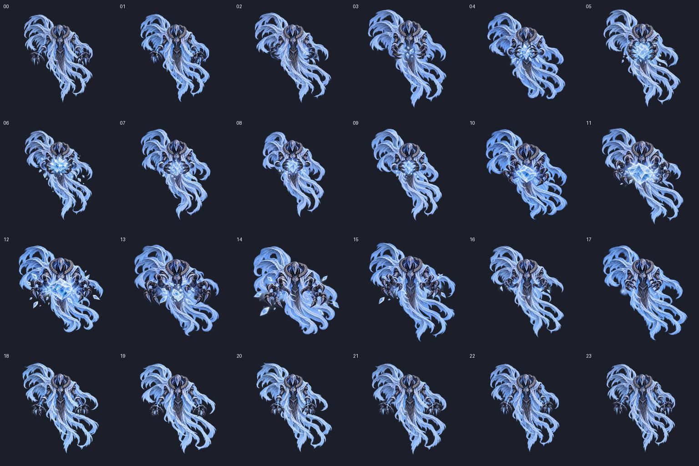

양손 얼음 밀기 · 화면을 향한 원근 동작
Idle에서 얼음을 모아 화면 쪽으로 밀어내고 복귀합니다. 손의 원근감, 몸통 반동, 천의 후행과 흩날리는 얼음 파편을 함께 확인하세요.
로딩 중
00 / 23
24프레임 · 1024×1024 셀 · PPU 24 · 중앙 피봇. 첫·끝은 Idle 원본입니다. 구간별 속도는 준비와 복귀를 길게, 밀기를 짧게 둔 검토용 설정입니다. Unity 애니메이션 클립은 만들지 않았습니다.
전체 프레임 펼치기
